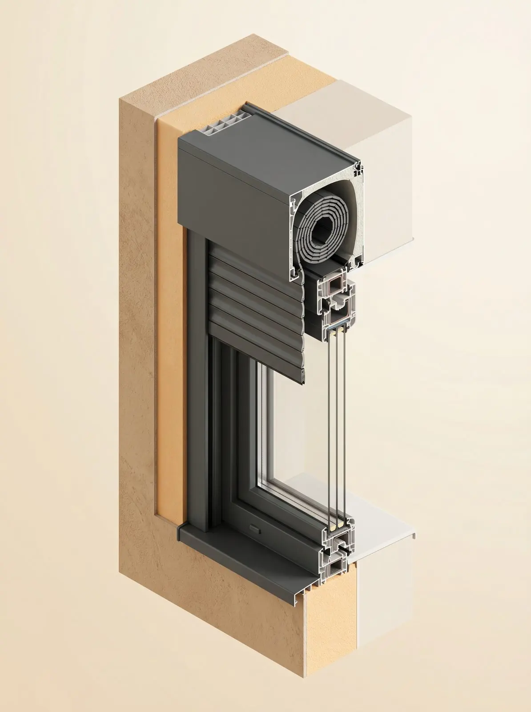

Cosa c’è sotto il tuo infisso.
La parte che non vedi decide metà della resa della finestra.
A chi ristruttura, a chi ha tapparelle con cassonetti vecchi, a chi sente freddo anche con finestre nuove.
Il falso telaio o il monoblocco di ultima generazione, con cassonetto integrato, decidono metà della resa della finestra. Il cassonetto è spesso il punto più freddo della facciata.
Il monoblocco arriva in cantiere già coibentato, con il vano per la tapparella o la persiana e le spalle isolate: la finestra si appoggia su una base che non disperde.
Posso cambiare solo il cassonetto?
Sì. Si può coibentare il cassonetto esistente o sostituirlo con uno ispezionabile e isolato, anche senza cambiare la finestra. Al sopralluogo ti diciamo se conviene.
Cos'è un monoblocco?
È un controtelaio completo che integra cassonetto, spalle e davanzale isolati. Si posa prima dell'intonaco e prepara il vano a ricevere la finestra senza ponti termici.
Lavoro sartoriale di coibentazione e copertura del controtelaio in metallo.Patrizia G. · Recensione Google
Dove installiamo
Da Vigano di Gaggiano a Milano Sud e Milano Ovest, con i nostri tecnici e i nostri posatori.